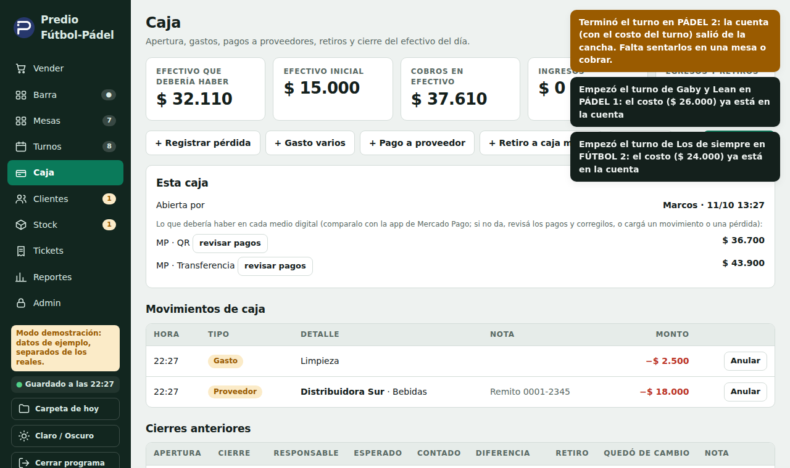
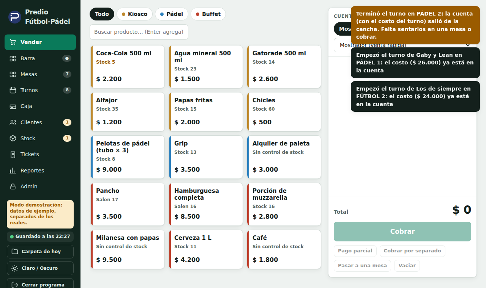
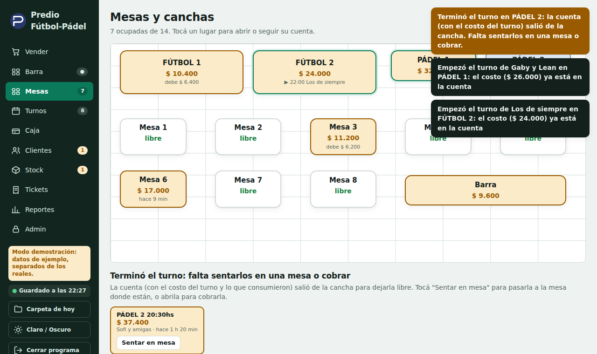
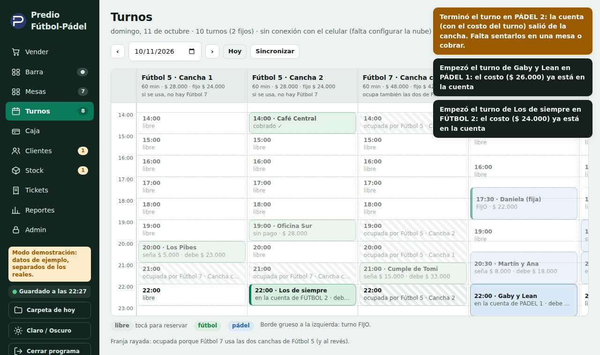
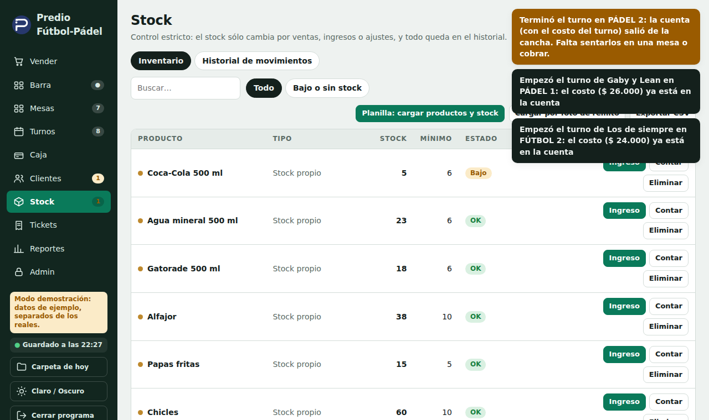

Manual de uso diario
Para quien atiende en el mostrador
Caja del Predio
1. Antes de empezar
La Caja del Predio es el programa donde se cobra, se anotan las mesas y se agendan los turnos. No necesita internet para vender. Todo lo que hacés se guarda solo, en el momento.
- Abrirlo: doble clic en el ícono Caja del Predio del escritorio. Tarda unos segundos.
- Cerrarlo: botón Cerrar programa, abajo a la izquierda. Se guarda todo y se hace una copia de seguridad. No lo apagues tirando de la ficha de la PC.
- Abajo a la izquierda dice «Guardado a las…». Si alguna vez se pone en rojo («NO SE ESTÁ GUARDANDO»), no cierres nada y avisá al encargado.
Si la pantalla muestra «El programa no responde», esperá unos segundos: se vuelve a conectar sola. Si pasa un minuto, cerrá la ventana y abrí el ícono del escritorio. Los datos están a salvo.
2. Abrir la caja al empezar el día
- Entrá a Caja (menú de la izquierda).
- Tocá Abrir caja, escribí tu nombre y el cambio que hay en el cajón.
- Sin caja abierta no se puede cobrar: arriba aparece un aviso con el botón para abrirla.

3. Vender (mostrador y barra)
- Entrá a Vender. Tocá los productos: cada toque suma uno.
- A la derecha ves la cuenta. Con + y − cambiás cantidades; con la x sacás un producto.
- Tocá Cobrar, elegí cómo pagan (efectivo, Mercado Pago QR o transferencia, fiado) y confirmá. Se puede pagar con dos medios a la vez.

El lápiz ✎ (cambiar un precio solo en esa venta)
Al lado del precio de cada producto de la cuenta hay un lápiz. Sirve cuando hay que cobrar distinto a la lista (una promo, un descuento a un cliente). Te pide el motivo. El producto queda marcado con * en el ticket y la diferencia se suma a «Descuentos» del día. El precio de lista no cambia.
4. Mesas y cuentas abiertas
En Mesas tocá la mesa, sumá lo que piden y dejala abierta. Cuando se van, tocá Cobrar. Se puede dividir la cuenta y cobrar por partes.

Si un producto de una cuenta ya fue cobrado o devuelto, quedó anotado: nada se borra sin dejar registro.
5. Turnos de cancha
En Turnos ves el día con una columna por cancha. Los huecos libres dicen «libre»: tocá uno para reservar (nombre y teléfono).
- Fútbol 7 usa las dos canchas de fútbol 5: si hay un fútbol 5, el 7 aparece rayado (ocupado), y al revés.
- Un turno fijo se repite todas las semanas (borde grueso a la izquierda). Si un día no juegan, entrá al turno y tocá Suspender este día.
- Para cobrar un turno, tocalo y elegí Cobrar. Cuando empieza el turno, su costo entra solo a la cuenta de la cancha; si al terminar la cuenta sigue abierta, pasa a una mesa suelta con el nombre de la cancha y la hora, y la cancha queda libre.
- Los turnos que se cargan desde el celular aparecen acá solos (arriba dice «sincronizado»). El botón Sincronizar los trae en el momento.

6. Stock
En Stock ves cuánto hay de cada producto. Cuando llega mercadería: Ingreso (podés cargar por caja o por unidades). Para corregir el número real: Contar. Todo cambio de stock queda anotado.
El programa avisa cuando queda poco, solo del producto que acabás de vender.

7. Cerrar la caja al terminar
- En Caja, tocá Cerrar caja.
- El programa te dice cuánto debería haber en el cajón (efectivo) y en cada medio digital (Mercado Pago QR y transferencia).
- Contá el efectivo y escribilo. Mirá en la app de Mercado Pago cuánto entró y escribilo en el casillero de ese medio.
- Si no da lo mismo: entrá a revisar pagos, corregí el ticket mal cargado, o cargá un movimiento. Si no lo encontrás, podés cerrar igual con la diferencia y dejar una nota (por ejemplo «comisión del QR»).
El cierre no te obliga a que dé exacto: es el análisis de lo que hay. Lo importante es anotar qué pasó.
8. Si algo sale mal
- Cobré mal un ticket: en Tickets se puede corregir o anular (pide el código del encargado). Queda anotado.
- Me equivoqué de producto: sacalo de la cuenta antes de cobrar.
- El programa se cerró solo o se trabó: volvé a abrir el ícono. Lo cobrado ya estaba guardado.
- Dudas con plata: no inventes: anotá una nota y avisá al encargado.